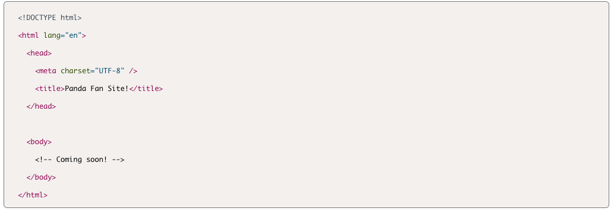
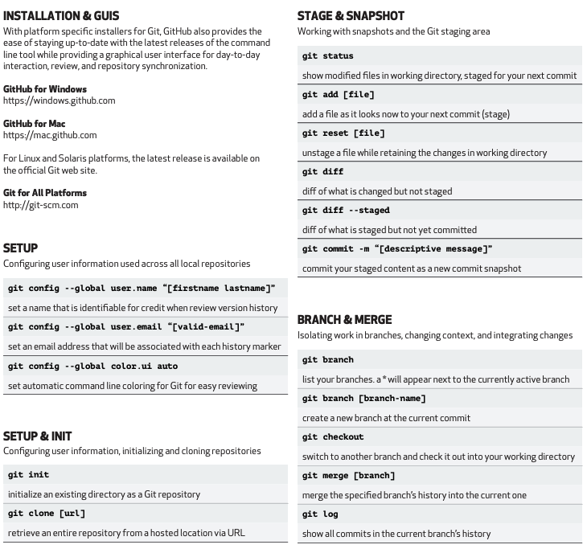
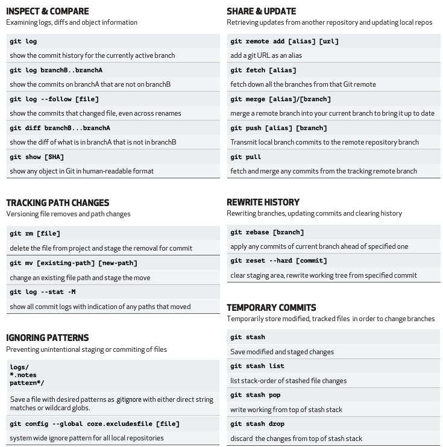

HTML
- The <head> element contains information, or metadata, that helps the browser to render the page correctly. Elements included within the <head> are not visible when a user looks at a webpage.
- The <head> element in this case defines the following three elements:
- The charset element sets our character encoding.
- The http-equiv element sets an HTTP header for content.
- The viewport element sets the default view for our webpage.
- HTML elements - The content is contained between an opening tag and a closing tag. These tags are most often represented by angle brackets with associated tag names contained inside (for example, <head>). Closing tags begin with a forward slash (for example, </head>).
- Inside the <head> element, the <title> element defines the title for a webpage. This element is required and is extremely important for Search Engine Optimization (SEO).
- The <h1>, <h2>, <h3>, <h4>, <h5>, and <h6> elements represent the level of heading a given text block represents.
- Headings are exactly what they sound like: larger or more prominent titles and subtitles to organize a page.
- When using headings, it is important that we use heading tags in order from <h1> to <h6> to make the page accessible to users who access the page using screen readers or other devices.
- The biggest heading,<h1>, should only appear once on each page.
- The <body> element contains the content that is shown to the user. All the elements that we want the user to see and interact with must be placed inside this element.
- <body> element defines the body of the document, which contains the content that is visible to the user. All of the content that we want to display to users must be inside the <body> element. The <body> element is an example of a semantic HTML element.
- Semantic HTML elements, the name of the element describes its content and the role it plays on a webpage. When possible, it is important to use semantic HTML elements, because they make your HTML easier to read by other developers and the browser. Semantic HTML also plays an important role in making sure your webpage is accessible to the widest variety of users, including those who use assistive technologies such as screen readers.
- Elements that are nested inside other elements are called child elements.
- If there are three elements nested inside of a <body> element, those three nested elements are known as child elements.
- The element that holds all the children—in this case, the <body> element—is known as the parent element.
- This “parent/child” language is often used by developers to explain the relationship among elements in HTML.
- The <ul>, <ol>, and <li> elements represent unordered lists, ordered lists, and list items. In essence, these HTML elements represent bulleted or numbered lists.
- The <img> element contains information about images that are displayed on the webpage. The <img> element can contain various attributes; the src attribute is the most important because it defines the location of the image.
- The <br> element creates a line of empty space, or a line break, between two blocks of content. There is a <br> element in between the image and the hyperlink below it.
- The <a> element (which stands for anchor) creates links to the same webpage or other webpages.
- The <p> element represents a paragraph or block of text. You'll use this element extensively to wrap most of the text on your webpages.
- The <footer> appears at the bottom of the page and usually contains the author, copyright, contact, sitemap, and navigation.
Example
CSS
- Enter your CSS notes here
Git
- GitHub is a cloud-based service that allows developers to store, manage, and collaborate on code. GitHub is connected to Git, which is software on your computer that tracks changes that you make to your code.
- An SSH key is an access credential for the secure shell (SSH) network protocol. Generating SSH keys allows developers to interface with certain remote services without having to constantly retype login information. This will be especially helpful as we begin to use another tool, GitHub. GitHub is a cloud-based service that allows developers to store, manage, and collaborate on code. GitHub is connected to Git, which is software on your computer that tracks changes that you make to your code.
Terms & Tips
- Repository (repo)
- A folder in which all files and their version histories are stored.
- Developers use repositories as folders to store the following:
- Files that contain code.
- Files that contain other information about the code, like a README file.
- The version history for all of the files in the repository.
- New Repo Tips
- Be unique and descriptive for each repository name.
- Use all lowercase letters.
- Use dashes; we can't have spaces in our repository names, so we use dashes instead.
- Include README files, they are used to pass along useful information to anyone who visits the repository on GitHub. They are named "README" because they literally are the file that any visitor or developer to the repository should read before they start exploring or contributing to it. For example, we could explain how to run our project on their local machines.
- Once new repo is created (README.md.), the .md extension, indicates that this is a Markdown file. Markdown is a lightweight plain-text formatting language. Working in a Markdown file is similar to working with a .doc, except we have to use special syntax for formatting.
- Branch
- A workspace in which you can make changes that won’t affect the live site.
- Markdown (.md)
- A way to write in Github that converts plain text to GitHub code. Sites such as Atom and Sublime.
- Commit Changes
- A saved record of a change made to a file within the repo.
- Pull Request (PR)
- The way to ask for changes made to a branch to be merged into another branch that also allows for multiple users to see, discuss and review work being done.
- Merge
- After a pull request is approved, the commit will be pulled in (or merged) from one branch to another and then, deployed on the live site.
- Issues
- This is how work is tracked when using git. Issues allow users to report new tasks and content fixes, as well as allows users to track progress on a project board from beginning to end of a specific project.
- Uses
- Track, organize, and communicate ideas, tasks, bugs, and enhancements.
- Identify bottlenecks or blockers that could prevent work progress.
- Avoid duplicating work by assigning tasks or issues.
GitHub Work Flow Steps
- Team members will open an issue via a project board.
- Team members will create a new branch from the most recent version of the main branch in the repository where the entire team works to avoid conflicts.
- Team members will add commits (edits/ changes) to their respective branches.
- Team members will open a pull request in which users can assign other team members to review content changes and internally discuss the details of the commits.
- After waiting for the build to complete, team members can preview the change on a test version of the website and request reviewers to approve or comment on the change. Once the reviewers approve the pull request, the commits merge into the main branch and are published on the live site.
GitHub Work Flow Steps Breakdown
- Create a branch in your repository. A short, descriptive branch name enables your collaborators to see ongoing work at a glance.
- Team members will create a new branch from the most recent version of the main branch in the repository where the entire team works to avoid conflicts.
- Your branch is a safe place to make changes. If you make a mistake, you can revert your changes or push additional changes to fix the mistake. Your changes will not end up on the default branch until you merge your branch. Commit and push your changes to your branch. Give each commit a descriptive message to help you and future contributors understand what changes the commit contains. For example, fix typo or increase rate limit. Ideally, each commit contains an isolated, complete change. This makes it easy to revert your changes if you decide to take a different approach. For example, if you want to rename a variable and add some tests, put the variable rename in one commit and the tests in another commit. Later, if you want to keep the tests but revert the variable rename, you can revert the specific commit that contained the variable rename. If you put the variable rename and tests in the same commit or spread the variable rename across multiple commits, you would spend more effort reverting your changes. By committing and pushing your changes, you back up your work to remote storage. This means that you can access your work from any device. It also means that your collaborators can see your work, answer questions, and make suggestions or contributions.
- Make a separate branch for each set of unrelated changes. This makes it easier for reviewers to give feedback. It also makes it easier for you and future collaborators to understand the changes and to revert or build on them. Additionally, if there is a delay in one set of changes, your other changes aren't also delayed.
- Create a pull request to ask collaborators for feedback on your changes. Pull request review is so valuable that some repositories require an approving review before pull requests can be merged. If you want early feedback or advice before you complete your changes, you can mark your pull request as a draft. For more information, see "Creating a pull request." When you create a pull request, include a summary of the changes and what problem they solve. You can include images, links, and tables to help convey this information. If your pull request addresses an issue, link the issue so that issue stakeholders are aware of the pull request and vice versa. If you link with a keyword, the issue will close automatically when the pull request merges. For more information, see "Basic writing and formatting syntax" and "Linking a pull request to an issue."
- In addition to filling out the body of the pull request, you can add comments to specific lines of the pull request to explicitly point something out to the reviewers.
- Your repository may be configured to automatically request a review from specific teams or users when a pull request is created. You can also manually @mention or request a review from specific people or teams.
- If your repository has checks configured to run on pull requests, you will see any checks that failed on your pull request. This helps you catch errors before merging your branch. For more information, see "About status checks."
- Reviewers should leave questions, comments, and suggestions. Reviewers can comment on the whole pull request or add comments to specific lines or files. You and reviewers can insert images or code suggestions to clarify comments. For more information, see "Reviewing changes in pull requests." You can continue to commit and push changes in response to the reviews. Your pull request will update automatically.
- Once your pull request is approved, merge your pull request. This will automatically merge your branch so that your changes appear on the default branch. GitHub retains the history of comments and commits in the pull request to help future contributors understand your changes. For more information, see "Merging a pull request."
- GitHub will tell you if your pull request has conflicts that must be resolved before merging.
- After you merge your pull request, delete your branch. This indicates that the work on the branch is complete and prevents you or others from accidentally using old branches. For more information, see "Deleting and restoring branches in a pull request." Don't worry about losing information. Your pull request and commit history will not be deleted. You can always restore your deleted branch or revert your pull request if needed.
Git Commands - Steps for New Branch to Merge Pull Request
- Navigate to project directory
- Command git status - to check which branch you're working in, should be main
- If not in main, enter Git Command git checkout main
- git checkout -b feature/"new branch name"
- “git checkout” switches to a branch, “-b” tells git to make new branch, “/new branch name” is the name of the new branch
- For VS Code, use command code .
- make changes or adds, then save
- Use command git add -A - Stages all changes, IE prepares it to be commited - MUST DO BEFORE COMMITTING
- Then command git commit -m "brief description of changes" -
- We use the -m flag to associate a message with our commit. Commit messages should be short descriptive messages of the changes implemented. Once completed, our Git repository is now up to date with our working directory
- Command git pull origin main - To pull the source from GitHub to make sure you have the latest commits and changes to avoid conflicts.
- Command git push origin feature/new branch name - commit to branch
- Navigate to repository, Select Compare & Pull Request, check base and compare for correct location, update title & description, and create pull request
- Navigate to pull request and merge if no conflicts
- delete branch
- Update your local repository with command git checkout main then command git pull origin main
- Close Issue
In terminal or Command Line
Open Text Editor
In Terminal or Command Line
Open GitHub
In terminal or Command Line
Open GitHub
Basic Git Commands
- Git commands always start with git and are used to save and track versions of your code. Using Git commands, we can initiate (or create) a repo, add our code to the repo, and view the different versions of our code, which are each stored in a unique commit. 

JavaScript
- Enter your Javascript notes here